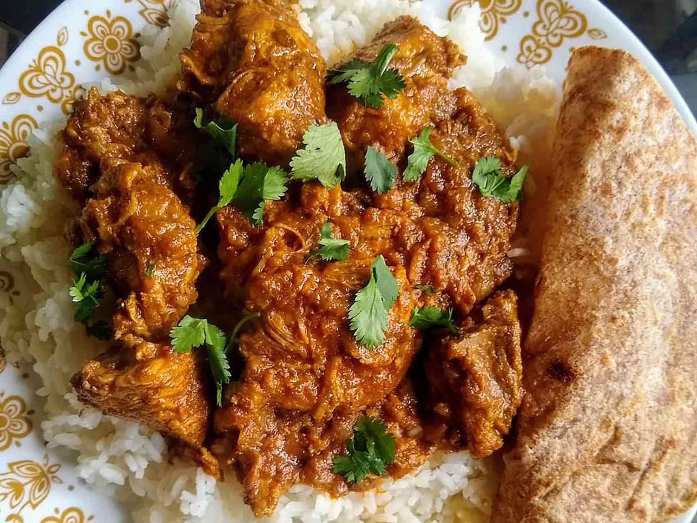

Indian Chicken Curry (Murgh Kari)

Description
Chicken curry is a dish originating from the Indian subcontinent. It is common in the Indian subcontinent, Southeast Asia, Great Britain, Caribbean, and Japan.
A typical curry from the Indian subcontinent consists of chicken stewed in an onion- and tomato-based sauce, flavoured with ginger, garlic, tomato puree, chilli peppers and a variety of spices, often including turmeric, cumin, coriander, cinnamon, and cardamom. Outside of South Asia, chicken curry is often made with a pre-made spice mixture known as curry powder.
Ingredients
- Garam masala
- Coriander
- Turmeric
- Cayenne pepper
- Tomato
- Yogurt
- Onion
- Garlic
- Ginger
- Boneless chicken breasts
Steps
- Gather all ingredients.
- Sprinkle the chicken breasts with 2 teaspoons salt.
- Heat oil in a large skillet over high heat; partially cook the chicken in the hot oil in batches until completely browned on all sides. Transfer browned chicken breasts to a plate and set aside.
- Reduce the heat to medium and add onion, garlic, and ginger to the oil remaining in the skillet. Cook and stir until onion turns soft and translucent, 5 to 8 minutes. Stir curry powder, cumin, turmeric, coriander, cayenne, and 1 tablespoon of water into the onion mixture; allow to heat together for about 1 minute while stirring.
- Add tomatoes, yogurt, 1 tablespoon chopped cilantro, and 1 teaspoon salt to the mixture; stir to combine.
- Return chicken breast to the skillet along with any juices on the plate. Pour in 1/2 cup water and bring to a boil, turning the chicken to coat with the sauce. Sprinkle garam masala and 1 tablespoon cilantro over the chicken.
- Cover the skillet and simmer until chicken breasts are no longer pink in the center and the juices run clear, about 20 minutes. An instant-read thermometer inserted into the center should read at least 165 degrees F (74 degrees C). Drizzle with lemon juice to serve.